Jubiwee
Jubiwee est une application web qui mesure automatiquement le ressenti des collaborateurs, détecte les signaux faibles et populations à risque. Elle génère également des plans d’actions pour donner aux managers les meilleures actions pour réduire le turnover, l’absentéisme et améliorer l’engagement dans leur équipe.